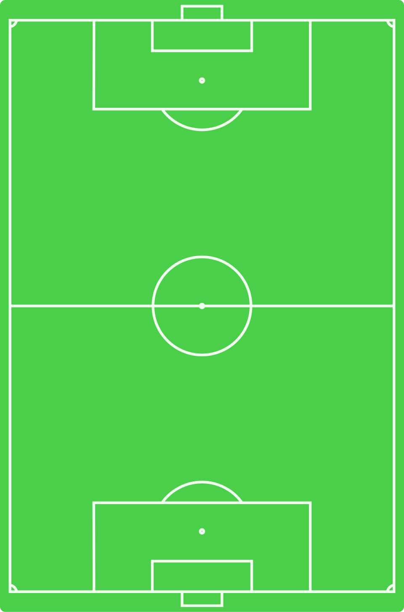
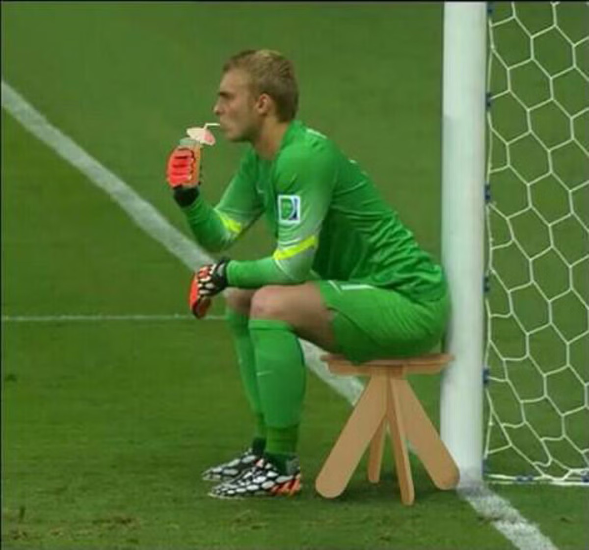
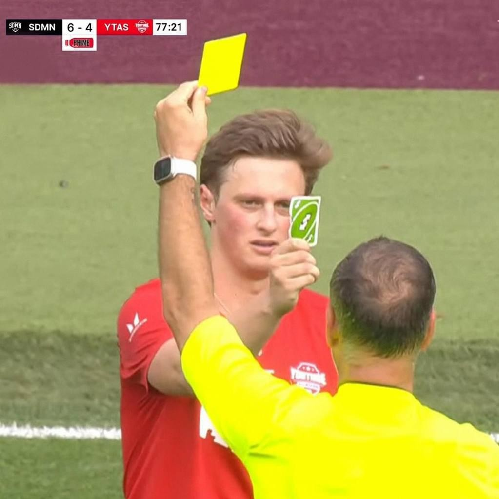
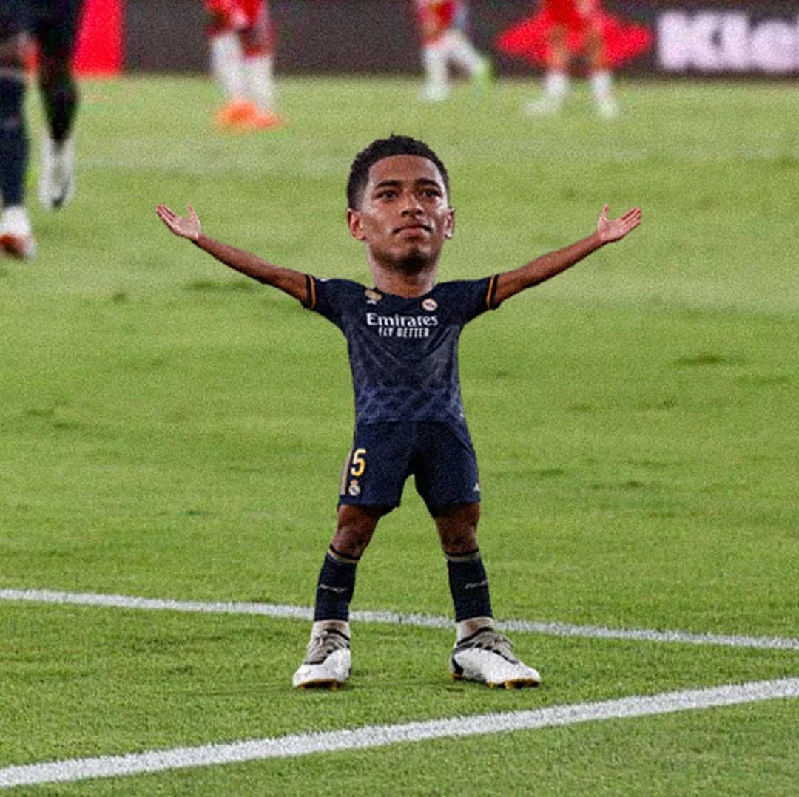

Formatsioonid
Jalgpallis kasutatakse erinevaid formatsioone, ehk mängijate paigutusi väljakul, ja nende abil määratakse kuidas meeskond jaguneb kaitsjateks, poolkaitsjateks ja ründajateks. Formatsiooni valik sõltub meeskonna mängustiilist, treeneri taktikast ja vastasmeeskonnast. Levinumad formatsioonid on:
Lisaks on olemas mille ma mõtlesin välja ja mida ei kasutata mitte kuskil, kuid arvan et oleks väga naljakas näha formatsioonina

Üks kõige tähtsamaid rolle jalgpallis. Tema peamine ülesanne on oma meeskonna väravat kaitsta,
nii et vastasmeeskond ei suudaks palli üle väravajoone lüüa. Väravavaht on ainus mängija,
kes võib oma karistusalas kätega palli puudutada. eristamiseks kannab ta teistest meeskonnakaaslastest
ja vastastest erinevat värvi võistlusvormi.
Reegel, mis keelab väravavahil võtta kätega vastu meeskonnakaaslase söötu (nn tagasisöödu reegel), kehtib enamikul juhtudel.
Väravavahid sooritavad tavaliselt lahtilööke ning jagavad kaitsjatele korraldusi nurgalöökide, otse-
ja kaudsete karistuslöökide ning vastaste katmise ajal. Lisaks nad mängivad olulist rolli väljakul strateegia suunamisel,
kuna neil on takistamatu vaade kogu väljakule, mis annab neile mängu arengust ainulaadse ülevaate.

Väravavaht on meeskonnas ainus kohustuslik positsioon. Kui väravavaht saab vigastada või eemaldatakse mängust,
peab tema koha üle võtma mõni teine mängija. Kuna see positsioon nõuab teistsuguseid oskusi kui väljakumängijatelt,
treenivad väravavahid meeskonnakaaslastest eraldi ning teevad oma oskuste arendamiseks sageli koostööd spetsiaalse väravavahtide treeneriga.
Kui tavamängijad peavad olema heas vormis, et pidada vastu kuni 90-minutiline mäng, siis väravavaht peab suutma kiiresti liikuda
ja olema väledate jalgadega, et teha lühikesi, kuid kiireid, liigutusi.
Nagu kõik teisedki mängijad, võivad väravavahid kanda mis tahes särginumbrit, kuid number 1 on peaaegu alati reserveeritud meeskonna esiväravavahile
ning number 13 teisele väravavahile ehk varuväravavahile. Väravavaht on ainus mängijapositsioon, mida ei arvestata meeskonna formatsiooni määramisel.
Seda seetõttu, et väravavaht on jalgpallis ainus positsioon, mis ei kuulu väljakumängijate hulka, ning ühtlasi ainus kohustuslik positsioon.
(Allikas)
Kaitsja on jalgpallimeeskonna üks olulisemaid positsioone, mille peamine ülesanne on takistada vastasmeeskonnal väravaid löömast ning kaitsta oma meeskonna väravat.
Kaitsjad mängivad tavaliselt oma meeskonna väljakupoolel väravavahi ees ning püüavad peatada vastaste rünnakuid, võita palli tagasi ja takistada vastastel väravale löömast.
Kaitsjad peavad olema head nii füüsilises võitluses kui ka mängu lugemises, et osata vastaste liikumist ette näha ja õigel ajal sekkuda.
Kaitsjad jagunevad tavaliselt keskkaitsjateks ja äärekaitsjateks. Keskkaitsjate peamine ülesanne on takistada vastaste ründajatel väravale pääsemast ning kaitsta karistusala.
Nad peavad olema tugevad õhuvõitluses, head peaga mängijad ning oskama vastaseid efektiivselt katta. Äärekaitsjad mängivad aga väljaku äärtes ning nende ülesanne on takistada vastaste ääremängijate rünnakuid.
Lisaks kaitsetööle osalevad nad sageli ka rünnakutes, toetades oma meeskonnakaaslasi mööda äärt üles liikudes ja tsenderdusi andes.

Kaitsjatelt nõutakse head füüsilist vormi, kiirust, jõudu ja vastupidavust, sest nad peavad suutma vastaste ründajatega sammu pidada ning võitma nii maas kui ka õhus toimuvaid pallivõitlusi.
Samuti on oluline hea koostöö väravavahi ja teiste kaitsjatega, kuna kaitseliin peab tegutsema ühtse tervikuna.
Kaitsjad peavad oskama õigel ajal vastaseid rünnata, sööte vahelt lõigata ning vajadusel palli ohutusse kohta lüüa.
Nagu teistelgi mängijapositsioonidel, võivad kaitsjad kanda erinevaid särginumbreid. Siiski on mõned numbrid teatud kaitsjapositsioonidega rohkem seotud.
Näiteks number 2 ja 3 on traditsiooniliselt äärekaitsjate numbrid, number 4 ja 5 aga sageli keskkaitsjate omad.
Tänapäeva jalgpallis ei piirdu kaitsjate ülesanded enam ainult värava kaitsmisega, sest paljud neist alustavad ka rünnakuid,
jagavad täpseid sööte ning aitavad meeskonnal palli enda valduses hoida.
(Allikas)
Poolkaitsja on jalgpallimeeskonna üks mitmekülgsemaid positsioone. Tema peamine ülesanne on ühendada meeskonna kaitse ja rünnak,
aidates nii kaitsjatel vastaste rünnakuid peatada kui ka ründajatel väravaid lüüa. Poolkaitsjad mängivad tavaliselt väljaku keskosas ning nende kaudu liigub suur osa meeskonna söötudest ja rünnakutest.
Nad peavad oskama palli kontrollida, jagada täpseid sööte ning leida võimalusi meeskonna ründetegevuse arendamiseks.
Lisaks peavad nad vajadusel kiiresti kaitsesse tagasi liikuma, et aidata oma meeskonnal palli tagasi võita.
Poolkaitsjad jagunevad tavaliselt kaitsvateks, kesk- ja ründavateks poolkaitsjateks. Kaitsvate poolkaitsjate peamine ülesanne on aidata kaitseliini,
takistada vastaste rünnakuid ja võita pall tagasi. Keskpoolkaitsjad vastutavad mängu ülesehitamise eest, jagades sööte kaitsjate ja ründajate vahel ning hoides meeskonna mängu tasakaalus.
Ründavad poolkaitsjad tegutsevad aga vastaste väravale lähemal ning nende ülesanne on luua väravavõimalusi, anda otsustavaid sööte ja võimalusel ka ise väravaid lüüa.

Poolkaitsjatelt nõutakse väga head füüsilist vormi, vastupidavust, mängu mõistmist ja tehnilisi oskusi. Kuna nad liiguvad mängu jooksul palju nii kaitse- kui ka ründetsoonis,
peavad nad suutma joosta peaaegu kogu 90-minutilise mängu vältel. Samuti on oluline hea pallikontroll, söötude täpsus ja oskus kiiresti otsuseid langetada.
Poolkaitsjad peavad tegema tihedat koostööd nii kaitsjate kui ka ründajatega, sest nende tegevusest sõltub suuresti meeskonna mängutempo ja rünnakute ülesehitus.
Nagu teistelgi mängijapositsioonidel, võivad poolkaitsjad kanda erinevaid särginumbreid, kuid mõned numbrid on teatud poolkaitsjapositsioonidega rohkem seotud.
Näiteks number 6 tähistab sageli kaitsvat poolkaitsjat, number 8 keskpoolkaitsjat ning number 10 ründavat poolkaitsjat ehk mängujuhti. Tänapäeva jalgpallis on poolkaitsjatel väga oluline roll,
sest nad peavad olema võimelised nii kaitsma, ründama kui ka kogu meeskonna mängu juhtima.
(Allikas)
Ründaja on jalgpallimeeskonna üks olulisemaid positsioone, kelle peamine ülesanne on lüüa väravaid ja aidata meeskonnal vastasest rohkem punkte koguda.
Ründajad mängivad tavaliselt väljakul kõige eespool, vastasmeeskonna väravale kõige lähemal. Nende ülesanne on leida vabu kohti vastaste kaitseliinis,
saada meeskonnakaaslastelt sööte ning kasutada tekkinud võimalusi väravate löömiseks.
Lisaks väravate löömisele peavad ründajad oskama luua väravavõimalusi ka teistele mängijatele ning avaldama vastaste kaitsjatele survet,
et takistada neil rahulikult mängu üles ehitada.
Ründajad jagunevad tavaliselt keskründajateks ja ääreründajateks. Keskründajate peamine ülesanne on lüüa väravaid, hoida palli vastaste kaitsjate surve all ning olla õigel ajal õiges kohas,
et kasutada ära väravavõimalusi. Ääreründajad mängivad aga väljaku vasakul või paremal äärel ning nende ülesanne on kiiruse ja tehniliste oskuste abil vastaste kaitsjatest mööduda.
Nad annavad sageli tsenderdusi karistusalasse, loovad väravavõimalusi ning liiguvad võimalusel ise väravale lööma.

Ründajatelt nõutakse head kiirust, pallikontrolli, tehnilisi oskusi ja täpset löögijalgset. Samuti peavad nad olema osavad vastaste kaitsjatest möödumises ning suutma kiiresti reageerida mänguolukordadele.
Oluline on ka hea positsioonitaju, sest ründaja peab oskama ette näha, kuhu pall võib liikuda, ning olema valmis väravavõimalusi ära kasutama.
Lisaks peavad ründajad tegema head koostööd poolkaitsjate ja teiste ründajatega, et luua võimalikult palju ohtlikke rünnakuid.
Nagu teistelgi mängijapositsioonidel, võivad ründajad kanda erinevaid särginumbreid, kuid mõned numbrid on ründajatega rohkem seotud. Näiteks number 9 on traditsiooniliselt keskründaja number,
number 7 ja 11 aga sageli ääreründajate omad. Number 10 võib kuuluda ründavale poolkaitsjale või teise ründaja rollis mängijale. Tänapäeva jalgpallis ei piirdu ründajate ülesanded enam ainult väravate löömisega,
sest nad peavad osalema ka meeskonna kaitsetöös, survestama vastaste kaitsjaid ning aitama kaasa kogu meeskonna mängu ülesehitamisele.
(Allikas)